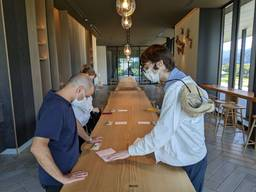
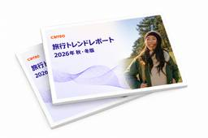
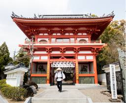

トラベルボイス
https://www.travelvoice.jp
観光産業の最新情報やトレンドを伝える、読者数No.1の専門ニュースメディア。厳選ニュースのほか、分析データや識者によるわかりやすい解説コラム記事も満載。その日のニュースをコンパクトにまとめたメールマガジンも好評。
フィード

外国青年を地域に迎える「JETプログラム」とは？ 約8万人の人的ネットワークを関係人口として考える【コラム】
トラベルボイス
日本観光振興協会理事長の最明仁氏によるコラム。今回は、JETプログラム（Japan Exchange and Teaching Programme）に着目。外国青年が地域社会と関係を築いてきた人的ネットワークを、地方誘客や関係人口などの観点から捉え直す。
1日前

商品・サービスの検索や購入でAIを使う分野、「旅行」が38%で最多、69%が最終判断は自分で ―Criteo
トラベルボイス
Criteo（クリテオ）は、AI時代の消費者の選び方の変化について解説するとともに、日本におけるAI活用に関する最新の調査結果を明らかにした。マイケル・コマシンスキーCEOが語る消費者を惹きつけるカギとは。
1日前

宿泊・航空・ツアー成約率を上げる「6つの打ち手」とは？ 世界の旅行予約データと1万人調査から読み解く、最新の旅行動向レポート公開、ダウンロード無料（PR）
トラベルボイス
（PR）Criteoが「旅行トレンドレポート2026年秋・冬版」を公開。提携サイトの予約・購買データや旅行者調査から市場動向を分析し、観光事業者やDMOに需要獲得のヒントを提示する。
1日前
北東アジアのベスト航空会社にANA、JALは機内食とWi-Fiで2冠、スターフライヤーは機内サービス首位 ―APEX FTE EXPO 2026
トラベルボイス
APEXは、アジアおよび南太平洋地域における「2027年APEXベスト地域賞」を発表。北東アジアの総合ベスト航空会社はANA。JALは機内食と機内Wi-Fiで受賞。
1日前

グアム観光復活へ航空・ホテル・旅行など9社共同プロジェクト始動、「なぜグアム？」で10の魅力を発信
トラベルボイス
ケン・ホテル＆リゾートホールディングスは、グアム観光に関わる企業と連携し、日本からの観光需要の回復を目指す「なぜグアム？」プロジェクトを始動。8社が業界の垣根を超えて参画。
1日前

アゼルバイジャン観光局、TVドラマ「VIVANT」で日本人旅行者の誘客へ、ロケ地から歴史・文化をめぐる旅をアピール
トラベルボイス
アゼルバイジャン観光局が現地企業5社と来日。人気ドラマ「VIVANT」を契機に日本市場への誘客を強化する。
10時間前
JTB中間決算、売上高6%増の5613億円、海外・訪日旅行が伸長、人件費や償却費の増加で営業利益45%減
トラベルボイス
JTBは、2027年3月期中間期の連結決算を発表。売上高は前年同期比106%の5,613億円となった一方、営業利益は同55%の28億円、経常利益は同65%の45億円、中間純利益は同32%の21億円の減益に。
20時間前

ミキ・ツーリスト、四国に初のインバウンド推進拠点を開設、高付加価値観光コンテンツを開発、B2Bネットワークも強化
トラベルボイス
ミキ・ツーリストは、四国エリアにおける初のインバウンド推進拠点として、香川県高松市に「四国デスティネーションHub」を開設。高付加価値な観光コンテンツの整備および国内外への流通拡大を進める。
1日前

KAWAII（かわいい）文化でインバウンドを日本各地へ、渋谷の縁日から温泉街へ広がるアソビJTBの参加型体験づくりを取材した
トラベルボイス
アソビJTBは、渋谷区のMIYASHITA PARKで「KAWAII縁日 あそべるアートとプレイパーク」を開催。原宿につづく第2弾。来年からはKAWAIIと温泉文化を融合した取り組みで地方にも進出する。
1日前

観光地経営のあり方に変化、世界で「スチュワードシップ」が進む理由、DMOの限界とDSOでの解決【コラム】
トラベルボイス
日本交通公社の山田雄一氏による連載コラム。ＤMO機能の限界と「デスティネーション・スチュワードシップ（DS）」の世界的な潮流を解説。看板の付け替えではない現実的な地域振興体制を考える。
1日前